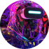
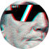
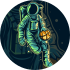

Depoimentos
Quem já embarcou com a gente garante: viajar para o espaço é uma experiência que muda a forma de ver o universo
Matheus Alvarez
O momento em que vi o planeta azul pela janela foi profundamente emocionante. Lá em cima, tudo parece silencioso e imenso. A sensação de estar flutuando, livre da gravidade, foi libertadora.

Mariana Silva
A viagem começou com um treinamento super bem planejado, que me deixou tranquila quanto aos procedimentos e à segurança. Quando finalmente decolamos, senti uma mistura de euforia e paz.

Carlos Henrique
Estar no espaço parecia ficção científica, mas ali estava eu, orbitando a Terra. O treinamento pré-lançamento foi intenso, mas essencial para entender cada etapa. A bordo, me impressionei com o conforto!

Beatriz Maria
Desde pequena sou fascinada pelo universo, e essa viagem foi a realização de um sonho antigo. Durante a órbita, pude observar as luzes das cidades, a curvatura do planeta e até a aurora boreal lá de cima.

Diego Lima
Como profissional da saúde, minha principal preocupação era a segurança. Fiquei impressionado com o nível de preparo da equipe e os protocolos seguidos em cada fase da missão.

Júlia Santos
Sempre fui apaixonada por astronomia, mas nada me preparou para o que senti ao olhar pela escotilha. A Terra é tão frágil e bela vista de cima. Me vi refletindo sobre nossa existência.